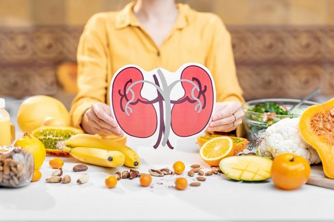

Memahami Stadium Penyakit Ginjal: Dari Ringan Hingga Gagal Ginjal

10 Tanda Peringatan Dini Penyakit Ginjal Kronis yang Sering Diabaikan

Gagal ginjal kronis (GGK) adalah masalah kesehatan serius yang dapat dihindari dengan gaya hidup sehat yang tepat. Berikut adalah beberapa langkah praktis yang dapat membantu anda menjaga kesehatan ginjal Anda dan mengurangi risiko terkena GGK:
Tekanan darah tinggi dan diabetes adalah dua penyebab utama GGK. Pastikan untuk mengukur tekanan darah dan gula darah secara teratur, dan ikuti petunjuk dokter Anda dalam menjaga kadar keduanya dalam batas normal.
Makanan yang rendah garam, rendah lemak jenuh, dan kaya akan serat, seperti buah-buahan, sayuran, biji-bijian, dan protein nabati, dapat membantu menjaga kesehatan ginjal. Batasi konsumsi makanan yang tinggi gula, lemak trans, dan garam.
Olahraga teratur membantu menjaga berat badan yang sehat, mengendalikan tekanan darah, dan meningkatkan kesehatan secara keseluruhan. Pilih aktivitas yang Anda nikmati, seperti berjalan kaki, berenang, atau bersepeda, dan lakukan secara teratur.
Alkohol dan merokok dapat merusak fungsi ginjal dan meningkatkan risiko GGK. Jika Anda mengonsumsi alkohol, lakukan dengan moderat, dan hindari merokok sama sekali.
Menjaga tubuh tetap terhidrasi sangat penting untuk kesehatan ginjal. Minumlah air secukupnya setiap hari, dan hindari minuman berkafein dan beralkohol yang dapat menyebabkan dehidrasi.
Mengonsumsi gizi seimbang dapat menurunkan risiko penyakit ginjal dengan mengontrol tekanan darah dan kadar kolesterol dalam tubuh. Gizi seimbang harus mencakup asupan buah dan sayur yang cukup, makanan karbohidrat seperti kentang, roti, atau nasi, produk susu atau alternatifnya, kacang-kacangan, ikan, telur, daging; serta asupan lemak jenuh, garam, dan gula yang dibatasi.
Dengan mengikuti langkah-langkah ini, Anda dapat mengambil langkah proaktif untuk menjaga kesehatan ginjal Anda dan mengurangi risiko terkena GGK. Jika Anda memiliki risiko tinggi atau gejala yang terkait dengan GGK, segera konsultasikan dengan dokter untuk evaluasi lebih lanjut dan saran yang sesuai.
Sumber informasi: Penyebab dan Cara Mengobati, 15 Cara Menjaga Kesehatan Ginjal, 7 Cara Merawat Ginjal